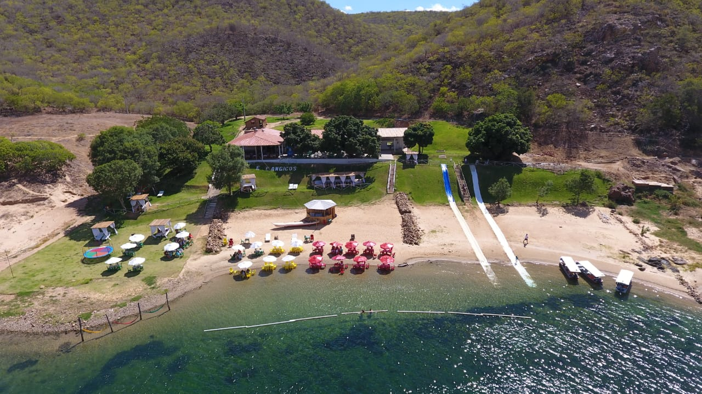
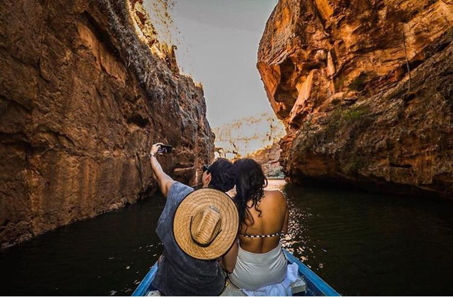

Promoção
Rota do Cangaço


A Canistur Turismo é uma empresa de turismo que atua em Piranhas-AL, Canindé do São Franscisco-SE e região
O passeio aos Canyons do São Francisco acontece de Segunda a Sexta, às 11:30h e aos Sábados, Domingos e Feriados, às 9:00h, 10:00h e 11:00h com embarque no restaurante karrankas - SE e prainha da Dulce - AL., em catamarãs e lanchas rápidas
A Rota do Cangaço, com saídas diárias, às 9:00h e 11:00h, poderá ser realizada através do CATAMARÃ E LANCHAS, com destino ao ANGICO. Lá, o visitante realizará uma trilha com cerca de 680m por meio da caatinga até a Grota do Angico, local de morte de Lampião e seu bando.
O passeio a Usina Hidroelétrica de Xingó acontece diariamente das 8:00h às 16:00h com local de partida no Centro de Visitantes de Xingó. Os visitantes que possam dispor de seu próprio veículo para condução do Guia.
Para grupos que possuam Micro-ônibus ou um ônibus convencional.
Voos panorâmicos, sobrevoando, usina hidroelétrica de xingo, (rota bronze, 4 minutos), a cidade de piranhas, e usina hidroelétrica e bairro de xingo,(rota prata, 8 minutos), piranhas, usina e os canyons do são Francisco a (rota ouro, 15 minutos)

O Roteiro, dos Canyons a Foz, consiste em uma Expedição de 200Km pela extensão do Rio São Francisco no trecho entre as cidades de Piranhas/AL e Piaçabuçu/AL.
Descansar em Traipu e Penedo/AL, visitar seus casarios, suas igrejas e encantar-se com sua arquitetura barroca será um imenso prazer. E sua culinária? Ah, uma delícia!
A Rota do Cangaço Cultural vem apresentar, de maneira dinâmica e envolvente, os fatos ocorridos acerca do Cangaço e suas tramas na região do Sertão do Rio São Francisco, de forma a levar o visitante a uma verdadeira viagem ao dia 28 de julho de 1938, antecedente ao dia da morte de Lampião e seu bando.
O Roteiro – Lago de Xingó corresponde a um exuberante passeio de lancha partindo da Usina Hidroelétrica de Xingó/AL através do leito do Rio São Francisco até a Usina Hidroelétrica P.A IV em Paulo Afonso/BA.
Com saída a partir das pousadas em Canindé de São Francisco/SE e Piranhas/AL, o passeio iniciará com destino a cidade de Água Branca/AL, onde haverá um City Tour, com passagem na Igreja Matriz, Mirante do Carvalho e Engenho São Lourenço. Em seguida, na cidade de Delmiro Gouveia, uma visita a Usina Hidroelétrica de Angiquinho, a primeira do Nordeste, construída por Delmiro Gouveia. Partindo de Angiquinho, seguiremos para a cidade de Paulo Afonso, e um city tour por todo o seu complexo hidroelétrico.